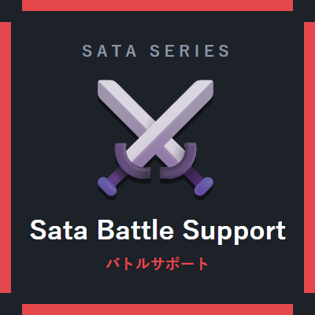

サタのバトルサポート
Sata Battle Support — 戦闘系4モジュール
戦闘の「見えない情報」を見えるようにするModです。 与えたダメージが数字で浮かび、敵の残りHPがわかり、 自分がピンチのときは画面が知らせてくれます。 ゲームバランスを変えるHP増加だけは、既定でOFFにしてあります。
モジュール一覧（4）
-
ダメージ表示（DamagePopup）既定ON
与えた／受けたダメージが数字になってふわっと浮かびます。 数字の大きさと表示時間は設定で変えられます。
-
モブHP表示（MobHealthBar）既定ON
近くのモブの頭上に残りHPを表示します。HPの割合で色が変わります（緑→黄→赤）。 表示距離のほか、「ダメージを受けた相手のみ」「視線の通るモブのみ」の絞り込みができます。
-
低HP警告（LowHpAlert）既定ON
HPが設定した割合を下回ると、画面の縁が赤く脈打って知らせます。 警告を出すHP割合（%）は設定可。
-
HP増加（HpBoost）既定OFF
全プレイヤーの最大HPを、設定したハート数ぶん増やします。 OFFにすると即座に元へ戻ります。バランスが変わる機能なので既定OFFです。
おもな設定項目
| 数字の大きさ（%）／表示時間 | ダメージ表示の見た目を調整できます。 |
|---|---|
| 表示距離 | モブHP表示の対象範囲です。 |
| 見えるモブのみ | ONで視線の通るモブだけに表示。OFFで壁の向こうも含め範囲内すべてに表示します。 |
| 警告を出すHP割合（%） | 低HP警告が発動するしきい値です。 |
| 追加ハート数 | HP増加で増やすハートの数です。 |
設定はすべてゲーム内のBキー（Sata Coreの統一設定画面）から変更できます。
ほかのSata Mod
Sata Core（前提Mod） ／ べんり道具箱 ／ けんちくヘルパー ／ 配信サポート ／ まきもどし